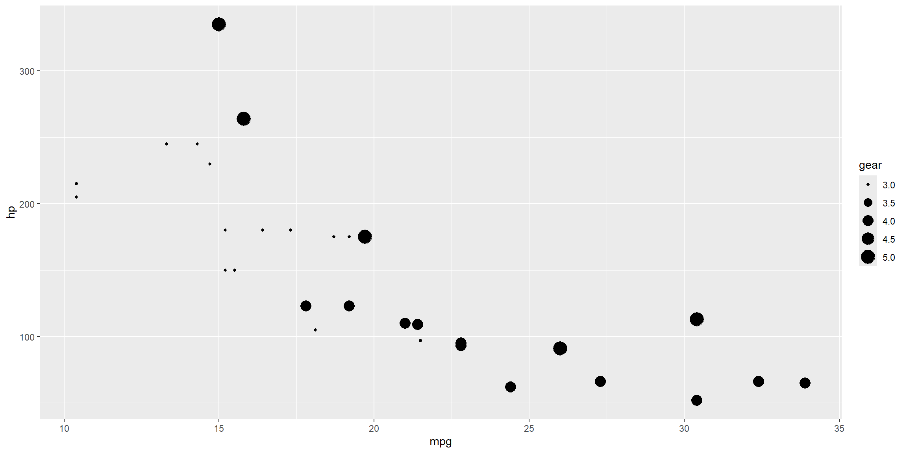
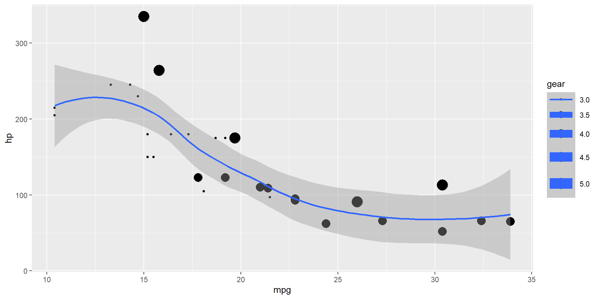
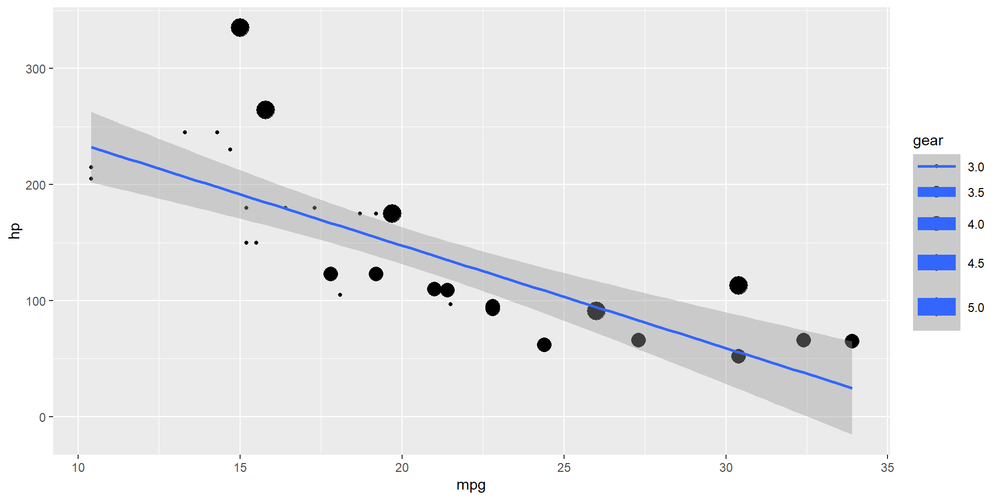

Il Comitato Etico del Cheeseburger con Doppio Cheddar
Questa è la intro
Evidenziando i codici del burger graph
Qui ricordati di parlare della terza guerra mondiale. Grafino non smooth, cavolo!
Ma quanto smooth è questo grafico del doppio cheddar?

Qui ricordati di parlare della seconda guerra punicica
# Create a scatterplot with a smoothing function
ggplot(mtcars,
aes(mpg, hp, size = gear)) +
geom_point()
# Create a scatterplot with a smoothing function
ggplot(mtcars,
aes(mpg, hp, size = gear)) +
geom_point() +
geom_smooth()
# Create a scatterplot with a smoothing function
ggplot(mtcars,
aes(mpg, hp, size = gear)) +
geom_point() +
geom_smooth(method = "lm") 
Un po’ di delay per il burger graph
Basta grafici
Quattro dipartimenti principali
- Masticazione Consapevole (CMC)
- Etica del Gocciolamento del Formaggio (DEGF)
- Sezione Spirituale del Panino (SSP)
- Sorveglianza Psico-Sensoriale (CSPS)
Il panino sperimentale
- Doppio cheddar stagionato 36 mesi
- Salsa “burro mentale”
- Pane affumicato al legno di quercia celtica
- Carne allevata con jazz
Cansone allegorico-sinfonica del burger doppio cheddar
Tissilawen hit1
Traduzione italiana di “Amidinine” dei Tissilawen Amidinine annas, Taad eddounia O amici, il mondo è cambiato, Toussas koud wa stejid Tutto passa e tutto si rinnova. Essas ihane imannek, Ayoussas La sofferenza umilia la tua fede, oh fratello mio.
Arrek′adem yeflass, Issan sa’dounia Le gambe tremano, la vita è dura. Terras wa′tribahou, Tiddas terakadem ayeflas Cammini nel fango, inciampi tra le difficoltà. Esmassinagh, Massas w djagh ibliss, Dakennas Ci hanno lasciati, ci hanno abbandonati al diavolo, tutti loro.
(Ritornello) Amidinine annas, Taad eddounia O amici, il mondo è cambiato, Toussas koud wa stejid Tutto passa e tutto si rinnova. Essas ihane imannek, Ayoussas La sofferenza umilia la tua fede, oh fratello mio.
Wesh naḥki wesh n’khali Cosa dovrei dire e cosa dovrei tacere? Ana fi galbi cha’let nar Nel mio cuore arde un fuoco. Wast ḥchaya seknetli Dentro le parole si è fatta silenziosa la mia voce, Besbeb ez′men el ghadar A causa dei tempi del tradimento.
Ya li jralek ma jrali Tu che hai vissuto ciò che ho vissuto, Koli a′lech rani meḥtar Dimmi perché resto così confuso. W’dmou′i yechahdouli Le mie lacrime sono testimoni, Mel harqa y’silou ki l′mṭar Della bruciatura che cade come pioggia.
Amidinine by Tissilawen
Conclusione
Dopo anni di sperimentazioni al limite dell’immaginabile, il Comitato Etico Internazionale per la Sperimentazione del Cheeseburger con Doppio Cheddar arrivò a un momento di profonda crisi interna. Nonostante il successo scientifico e l’espansione globale delle sue attività, qualcosa era cambiato. Alcuni membri iniziarono a chiedersi se fosse ancora etico spingere oltre i confini della fusione casearia. Gli ultimi esperimenti avevano prodotto effetti inspiegabili: soggetti che sviluppavano improvvisi legami emotivi col panino, panini che cambiavano posizione quando nessuno guardava, e un caso isolato in cui un cheeseburger sembrò ruotarsi verso una telecamera durante un’intervista.
Questi segnali portarono il comitato a interrompere ogni attività. Per la prima volta dalla sua fondazione, il CEISCDC entrò in silenzio operativo. Nessun nuovo esperimento, nessuna nuova ricetta. I membri si ritirarono in una panetteria riconvertita a luogo di riflessione, evitando qualsiasi alimento fuso per quaranta giorni. Durante quel periodo emerse una consapevolezza comune: forse il problema non era il panino, ma la pretesa di dominarlo.
Quando il comitato riapparve, non fu per annunciare nuove linee guida, ma per dichiarare la fine delle sperimentazioni. Nessun cheeseburger sarebbe più stato testato senza il consenso simbolico del formaggio stesso. Il CEISCDC non venne sciolto, ma si trasformò lentamente in un collettivo di osservazione filosofica del cibo. Le riunioni, un tempo scientifiche, si trasformarono in incontri contemplativi. I verbali diventarono racconti. Il linguaggio si fece più lento. Nessuno parlava più di morsi, ma di relazioni tra panino e persona.
L’ultima comunicazione ufficiale del comitato fu una sola frase, diffusa attraverso il vapore di una griglia lasciata accesa al tramonto: “Non tutto ciò che è fuso è innocente.”
Da allora, nessuno sa con certezza dove si trovino i membri. Alcuni dicono che si nascondano tra le cucine dei ristoranti più silenziosi del mondo. Altri sostengono che siano tornati al cheddar, sotto forma di sapore persistente.
Ma una cosa è certa: da quel giorno, nessuno ha più osato creare un panino con più di due strati di formaggio.
Foto cheeseburger doppio cheddar
Cheeseburger con doppio cheddar percepito (da te osservatore) visivamente


Ringraziamenti
Cheddar.